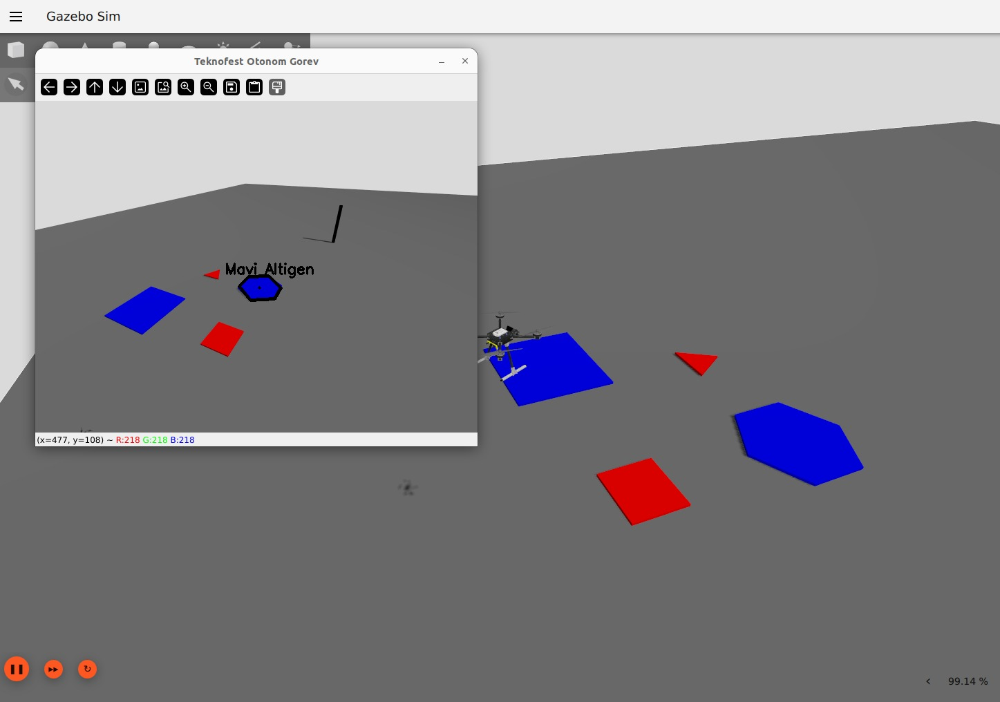

// projects
Selected Projects

Graduation Project
Autonomous Fire Detection & Extinguishing UAV
Built and flight-tested an autonomous drone that detects smoke using YOLOv8, calculates target GPS coordinates via vision-based geo-location, and navigates autonomously to the fire source.
ArduPilot
YOLOv8
PyMAVLink
OpenCV
Raspberry Pi
Pixhawk
Gazebo
Read case study

Personal Project
Gez — Autonomous Differential-Drive Robot
Built from scratch: low-level PID motor control on ESP32 with micro-ROS bridge to ROS 2, URDF modeling, RPLIDAR integration, SLAM, and Nav2 autonomous navigation.
ROS 2
micro-ROS
ESP32
PID
SLAM
Nav2
RPLIDAR
Read case study

Teknofest Competition
IZU IHA — Autonomous UAV Competition System
Autonomous quadrotor for Teknofest International UAV Competition. Designed for autonomous target detection, payload delivery, and object retrieval using computer vision and PX4.
PX4
MAVSDK
OpenCV
Raspberry Pi 5
Gazebo
Fusion 360
ANSYS
Read case study